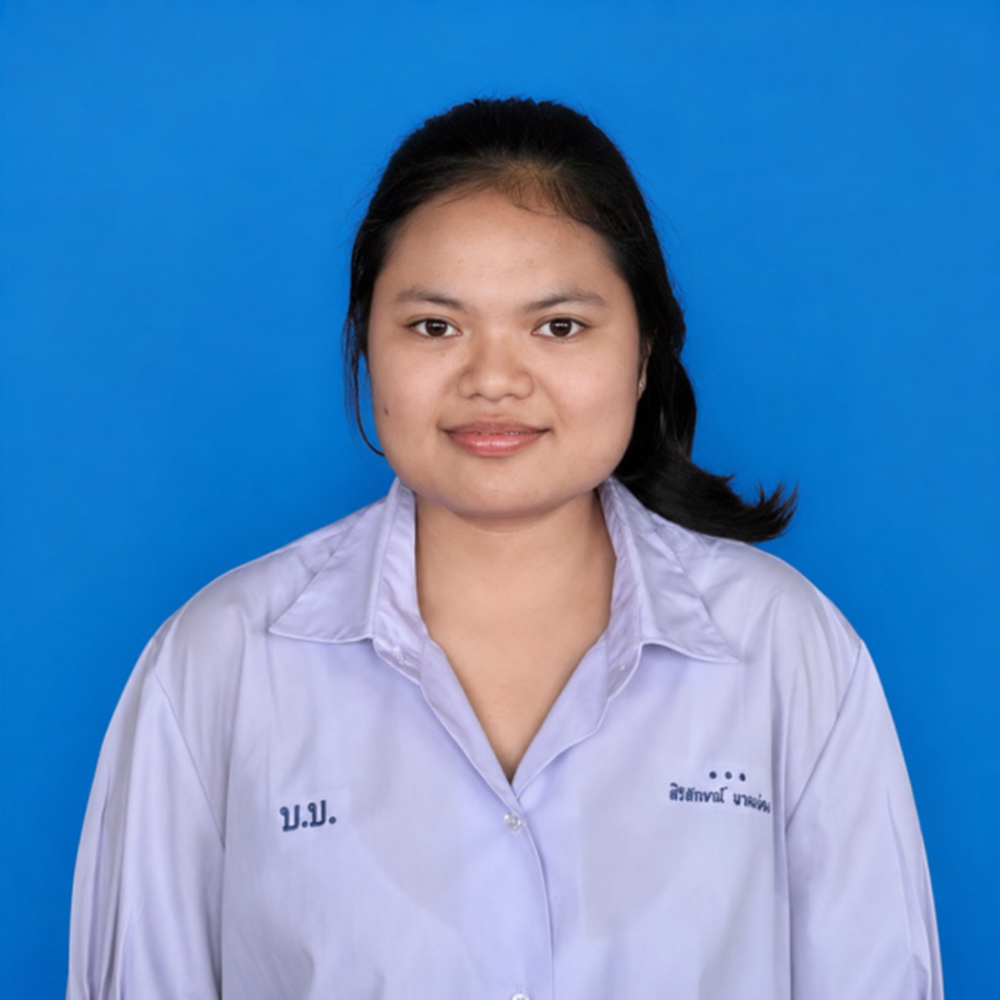
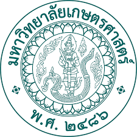

💫นางสาว สิริลักษณ์ ผาดผ่อง💫
แฟ้มสะสมผลงาน (Portfolio) ฉบับนี้จัดทำขึ้นเพื่อรวบรวม ประวัติส่วนตัว ประวัติการศึกษา ผลงาน โครงงาน และกิจกรรมต่าง ๆ ที่แสดงถึงความสามารถ ความสนใจ และความตั้งใจของข้าพเจ้า
ข้าพเจ้าหวังเป็นอย่างยิ่งว่าแฟ้มสะสมผลงานเล่มนี้จะช่วยให้ผู้อ่านได้รู้จักตัวตน ความสามารถ และเป้าหมายในการศึกษาต่อของข้าพเจ้ามากยิ่งขึ้น และเป็นส่วนหนึ่งที่แสดงถึงความมุ่งมั่นในการพัฒนาตนเองเพื่อก้าวไปสู่ความสำเร็จในอนาคต
นางสาว สิริลักษณ์ ผาดผ่อง


สาขาวิชาวิทยาศาสตร์ทั่วไป
ฉันมีความสนใจในวิชาวิทยาศาสตร์ เพราะเป็นวิชาที่ได้เรียนรู้ และค้นหาคำตอบจากสิ่งต่าง ๆ รอบตัว อีกทั้งยังชอบการทดลอง เพราะทำให้ได้ลงมือปฏิบัติจริงและได้เรียนรู้จากประสบการณ์
นอกจากนี้ ฉันยังชอบการวิเคราะห์และการแก้ปัญหา ซึ่งเป็นทักษะสำคัญในการเรียนวิทยาศาสตร์ ฉันจึงมีความตั้งใจที่จะศึกษาต่อในคณะศึกษาศาสตร์ สาขาวิชาวิทยาศาสตร์ทั่วไป เพื่อพัฒนาความรู้และทักษะของตนเอง และนำความรู้ไปถ่ายทอดให้ผู้อื่นในอนาคต
ฉันหวังว่าจะได้พัฒนาตนเองทั้งด้านความรู้ การทดลอง การคิดวิเคราะห์ และการแก้ปัญหา เพื่อก้าวไปสู่การเป็นครูวิทยาศาสตร์ที่ดี และสามารถสร้างแรงบันดาลใจให้นักเรียนรักและสนใจวิทยาศาสตร์